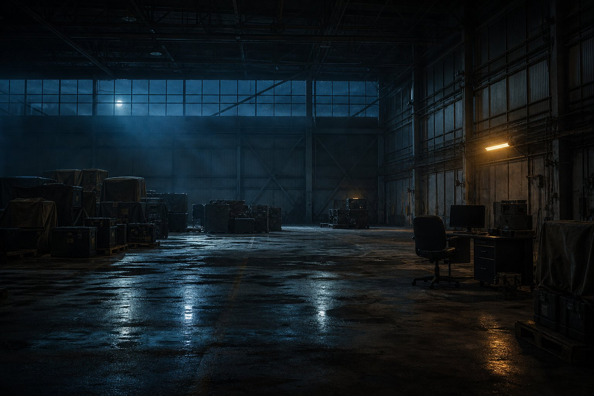

1. Où en est-on réellement
Au 13 novembre 2026, la Saison 7 : Utopia est la saison en cours d'Arena Breakout: Infinite. Elle a démarré le 16 septembre 2026 et approche de ses deux mois d'existence. Aucune date de lancement pour la Saison 8 n'a été annoncée par Morefun : pas de post de révélation, pas d'annonce sur Steam, pas de mention dans les notes de patch — la dernière mise à jour en date étant le Live Update du 10 novembre. Officiel
En revanche, le rythme des saisons est très régulier, et c'est ce rythme qui permet d'estimer la bascule avec une précision raisonnable.
L'état réel du jeu, en chiffres
Avant d'estimer une date, il faut savoir de quel jeu on parle. Relevé Steam du 18 novembre 2026 à 03:00 UTC.
| Mois | Moyenne | Variation | Sommet | Ce qui s'est passé |
|---|---|---|---|---|
| Sept. 2025 | 37 206 | — | 65 944 | Lancement 1.0 sur Steam et Epic (Saison 3) |
| Oct. 2025 | 35 948 | −3,4 % | 64 757 | Effet de lancement prolongé |
| Nov. 2025 | 24 626 | −31,5 % | 43 012 | Effet post-lancement |
| Déc. 2025 | 18 569 | −24,6 % | 29 830 | Fin de Saison 3 |
| Janv. 2026 | 24 264 | +30,7 % | 42 986 | Saison 4 : Dusk to Dawn, carte Airport |
| Févr. 2026 | 22 154 | −8,7 % | 38 236 | — |
| Mars 2026 | 18 022 | −18,7 % | 31 880 | Fin de Saison 4 |
| Avr. 2026 | 22 061 | +22,4 % | 38 295 | Saison 5 : Distortion |
| Mai 2026 | 19 676 | −10,8 % | 35 820 | — |
| Juin 2026 | 16 905 | −14,1 % | 33 839 | Fin de Saison 5 |
| Juil. 2026 | 23 790 | +40,7 % | 41 704 | Saison 6 : White Nights |
| Août 2026 | 24 196 | +1,7 % | 38 795 | Kamona Summer Festival |
| Sept. 2026 | 24 630 | +1,8 % | 45 937 | Saison 7 : Utopia |
| Oct. 2026 | 24 947 | +1,3 % | 44 873 | Événement Halloween, Warlord Tournament III |
| 30 derniers jours | 21 769 | −12,7 % | 37 331 | Milieu de Saison 7 |
Non, le jeu ne meurt pas. Un jeu qui meurt Montre des sommets de plus en plus bas, saison après saison. ABI fait l'inverse : les Saisons 6 et 7 ont tenu la moyenne autour de 24 000 pendant quatre mois d'affilée — un plateau qu'aucune saison antérieure n'a atteint. Le creux actuel, −12,7 % par rapport à octobre, reproduit le schéma de milieu de saison déjà observé deux fois cette année. La Saison 7 a 63 jours au 18 novembre, alors que les quatre dernières saisons ont duré 78 à 114 jours : le point bas n'est pas encore atteint. Documenté
Le vrai reproche, qui n'est pas un reproche de population. Les fils « le jeu meurt » de cette semaine ne parlent pas de lobbies vides : ils parlent de balance et de modes retirés. La critique la plus fréquente vise la décision de retirer le Hostile Sector trois mois après l'avoir ajouté, et l'absence de pérennité du contenu. Ce sont des reproches de direction artistique, pas de santé du jeu. Et c'est précisément ce type de critique qui se résorbe à chaque nouvelle saison : les quatre lancements depuis janvier ont fait remonter la moyenne de 22 % à 41 %. Communautaire
2. Le calendrier officiel des saisons
| Nom | Numéro | Début | Fin | Durée | Préavis |
|---|---|---|---|---|---|
| Early Access | S0 | 13 août 2024 | 20 novembre 2024 | 99 jours | 6 jours |
| Season One | S1 | 20 novembre 2024 | 29 avril 2025 | 160 jours | 13 jours |
| Ignition | — | 29 avril 2025 | 10 juillet 2025 | 72 jours | 27 jours |
| Crimson Edge | S2 | 10 juillet 2025 | 15 septembre 2025 | 67 jours | 14 jours |
| Breach | S3 | 15 septembre 2025 | 8 janvier 2026 | 115 jours | 13 jours |
| Dusk to Dawn (Airport Hunt) | S4 | 8 janvier 2026 | 2 avril 2026 | 84 jours | 10 jours |
| Distortion | S5 | 2 avril 2026 | 30 juin 2026 | 89 jours | 14 jours |
| White Nights | S6 | 30 juin 2026 | 16 septembre 2026 | 78 jours | 7 jours |
| Utopia | S7 | 16 septembre 2026 | En cours | 78 à 89 j | 8 jours |
| À venir | S8 | Non annoncé | Estimée : 8 – 14 décembre 2026 | — | 7 à 8 j |
Les saisons 4, 5 et 6 ont duré 78 à 89 jours. En appliquant ce rythme à la saison 7, la fin de l'Utopia se situe entre le 3 et le 14 décembre 2026 — la fourchette la plus probable étant la semaine du 8 au 14 décembre. Communautaire
Le risque à garder en tête
La Saison 4 a glissé sur janvier 2026 à cause des fêtes. Une saison 8 repoussée en janvier 2027 n'est donc pas impossible : c'est le scénario le plus prudent pour qui vend des plans de Battle Pass ou planifie un gros achat de Bonds.
Attention à la numérotation : Ignition est une saison intermédiaire sans numéro, ce qui décale la lecture. Le nom « Season 2 : Crimson Edge » est bien la deuxième saison numérotée, mais la cinquième saison jouable du jeu. Communautaire
3. Les trois scénarios, et leurs chances
Le rythme des saisons est assez régulier pour chiffrer les probabilités — et c'est plus utile qu'une date unique, parce que cela dit quoi surveiller. Communautaire
| Scénario | Fenêtre | Pourquoi | Probabilité |
|---|---|---|---|
| Cas de base | 8 – 14 décembre 2026 | Cadence de 78 à 89 jours, et les événements datés de la S7 courent jusqu'au 7 décembre | ≈ 55 % |
| Anticipé | 3 – 7 décembre 2026 | La saison la plus courte récente (78 jours) et des événements écourtés | ≈ 10 % |
| Report de fêtes | Début – mi-janvier 2027 | La S3 a couru sur Noël et la S4 n'a démarré que le 8 janvier | ≈ 35 % |
Pourquoi janvier reste possible
Un indice fait pencher la balance : rien dans les notes actuelles n'est daté au-delà du 7 décembre. Si Morefun avait prévu une saison en janvier, on s'attendrait à voir au moins un événement courant jusque tard décembre. Un événement de Noël reste donc annonçable — c'est exactement ce qui s'est produit à l'époque de la S3.
Le signal à surveiller
Le silence du 13 novembre ne veut rien dire. Avec un préavis de 7 à 8 jours, un lancement le 8 décembre ne s'accompagnerait d'une révélation que vers le 30 novembre – 7 décembre. Aucune annonce avant cette date n'est donc anormale. Sur Reddit, un joueur résumait la situation le 11 novembre : « No mention of it yet, and it should be about 3 weeks out... » — avant de comparer au build-up de la S7, où « they had the hype train ROLLIN' ». Communautaire
4. Comment l'annonce est-elle faite
Morefun n'annonce pas ses saisons d'un bloc : le schéma est constant, et il permet de savoir à quel moment guetter.
| Saison | Premier post officiel | Lancement | Délai |
|---|---|---|---|
| Ignition (Saison 1) | 2 avril 2025 | 29 avril 2025 | 27 jours |
| Saison 2 | 26 juin 2025 | 10 juillet 2025 | 14 jours |
| Saison 3 | 2 septembre 2025 | 15 septembre 2025 | 13 jours |
| Saison 4 | 29 décembre 2025 | 8 janvier 2026 | 10 jours |
| Saison 5 | 19 mars 2026 | 2 avril 2026 | 14 jours |
| Saison 6 | 23 juin 2026 | 30 juin 2026 | 7 jours |
| Saison 7 | 8 septembre 2026 | 16 septembre 2026 | 8 jours |
Concrètement : à partir de la mi-novembre, le premier post « reveal » est attendu, et le lancement suit généralement une à deux semaines plus tard — mais la plage historique va de 6 à 27 jours, et les deux dernières saisons n'ont annoncé que 7 et 8 jours à l'avance. Plus le préavis est court, moins vous avez de temps pour préparer votre kit de fin de saison.
Un précision de vocabulaire : le 10 décembre 2025, MoreFun avait publié un « Coming Early Jan. » pour la Saison 4 sans donner de jour. Ce n'était pas le premier post daté — celui-là est du 29 décembre, dix jours avant le lancement. Un drapeau sans date ne compte pas dans le compte à rebours : c'est le post qui donne la date qui compte. Officiel
L’endroit exact où guetter — et à quelle heure
Deux erreurs de surveillance costent cher, et les deux sont fréquentes.
- Les notes de patch sont désormais sur le site de l’éditeur, plus sur Steam. Steam reste le canal des grandes annonces de saison, mais les notes de mise à jour ordinaires sont publiées sur le site officiel de MoreFun. Ne regardez pas Steam en exclusivité.
- Le rythme est environ tous les quinze jours, le plus souvent à 03:00 UTC. Sur les seize mises à jour en direct depuis avril 2026, quatorze affichent une heure et dix de celles-ci sont à 03:00 UTC ; les autres à 05:00, 07:00 ou 12:00. Une reprise à 03:00 UTC un mardi ou un jeudi est donc le rendez-vous à mettre dans votre agenda.
- Et surtout, distinguez mise à jour et bascule de saison. Une mise à jour ordinaire ne coupe généralement pas les serveurs : le jeu redémarre et se patche. Une bascule de saison, elle, ferme les serveurs six à douze heures. Si votre jeu est indisponible au milieu de la journée et qu’une note détaillée accompagne le redémarrage, c’est qu’une saison se prépare.
Source : revue des publications de MoreFun (56 notes de mise à jour, du 10 mai 2024 au 26 octobre 2026) et calendrier des saisons.
5. Les signaux de l'annonce, dans l'ordre où ils arrivent
Le calendrier n'est pas une devinette : MoreFun suit un schéma de publication constant, et chaque étape laisse un signal vérifiable. Voici l'ordre dans lequel ils se présentent, du plus précoce au plus tardif.
| Étape | Signal concret | Délai observé avant le lancement |
|---|---|---|
| 1 | Un serveur de test sur invitation — on s'inscrit, on est tiré au sort, et on ne reçoit le build qu'ensuite | 19 à 30 jours |
| 2 | Les événements de fin de saison — ils commencent en amont et chevauchent la bascule | Environ 20 jours |
| 3 | Un post daté sur Steam ou sur le site de l'éditeur, qui donne la date | 6 à 27 jours (7–8 jours ces deux dernières saisons) |
| 4 | L'avis de reset de saison, qui détaille ce qui retombe à zéro et ce que devient votre rang | 5 jours |
Source : revue des publications de MoreFun (1er novembre 2026). Le délai de 19 à 30 jours pour les tests serveur est une moyenne sur les Saisons 3, 4 et 6.
L'historique des tests serveur, pour calibrer l'attente
Les tests sont rare, mais leur calendrier est régulier quand ils existent. Les voici, tous en UTC :
| Test | Dates |
|---|---|
| Test technique, avant Ignition | 5 – 14 mars 2025 |
| Test de la Saison 2 | juin 2025 (mis à jour le 18 juin) |
| Test de la Saison 3 | 28 août – 8 septembre 2025 |
| Test de la Saison 4 | 10 – 22 décembre 2025 |
| Test de la Saison 6 | 10 – 22 juin 2026 |
L'absence de test ne prouve rien
Les Saisons 5 et 7 sont arrivées sans aucun test serveur public. Un test qui ne vient pas n'est donc pas un mauvais signe. Et un test qui vient, lui, annonce une saison à une date précise et proche : si une inscription au test ouvre en novembre, la bascule est probablement en décembre, pas en janvier.
Ce qu'il faut surveiller, concrètement
- L'onglet Actualités du jeu et le fil Steam de l'app 2073620 — c'est là que tout apparaît en premier.
- Les notices d'événement en jeu : les événements de fin de saison commencent environ 20 jours avant la bascule, et leur date de clôture vous donne une borne haute.
- L'avis de reset : celui de la Saison 5 est arrivé 5 jours avant la fin. C'est le dernier signal, et c'est le plus riche en information.
- La file de maintenance : une coupure planifiée de plusieurs heures en pleine journée (02:00 – 09:00 UTC, un mercredi, pour la Saison 7) annonce presque toujours une mise à jour majeure.
Et le faux signal à écarter : le jeu mobile a eu sa propre Saison 8: Frozen Frontline en avril 2025. Ce n'est pas la même jeu. Toute page qui présente ça comme la saison 8 d'ABI Infinite se trompe.
Un signal de fond : le sondage de mi-saison
Le 17 novembre 2026, MoreFun a ouvert un sondage sur les règles d'entrée en Lockdown, Forbidden Zone et Warlord Tournament : baisse possible du plafond de munitions en Lockdown (T5 vers T4, exception pour les calibres de sniper) et relèvement possible de la valeur d'équipement minimale en Forbidden Zone et au Warlord. Ce n'est pas une annonce de règles : c'est une consultation, sans date et sans application immédiate. Mais un éditeur qui interroge sa communauté sur ses plafonds d'entrée en pleine saison prépare très probablement une révision pour la suite. Officiel
Comment en tenir compte : les règles décrites dans ce guide — T4 en Normal, T5 en Lockdown, 150 000 à 900 000 de valeur d'équipement en Lockdown, 450 000 en Forbidden Zone — restent celles en vigueur tant qu'une note de patch n'a pas dit le contraire. Le détail des cinq questions est repris dans la page des patch notes.
6. Le compte à rebours des événements de la S7
La saison n'est pas une fin brutale : elle a une queue. Les événements de fin de saison se chevauchent, et c'est là que se joue la dernière fenêtre pour obtenir des récompenses qui ne reviendront pas. Officiel
| Événement | Fin | Ce qu'il faut faire avant |
|---|---|---|
| Trash to Treasure Smelter | 15 novembre 2026 | Échanger les derniers composants contre des récompenses avant la fermeture |
| Kamona Investigation : Tea Break Delights | 22 novembre 2026 | Finir les tâches quotidiennes : les récompenses sont conditionnées aux tâches |
| Halloween : Mysterious Pumpkin Night | 25 novembre 2026 | Récupérer les récompenses d'Halloween restantes |
| Third Warlord Tournament | 7 décembre 2026 | Terminer le classement et encaisser les primes |
| Supplies Girls' Frontline 2 | 14 décembre 2026 | Échanger les composants restants avant la fermeture |
| Supplies Emerald Arachnid et Toxic Edge | 29 décembre 2026 | Ces deux événements courent bien au-delà de la bascule attendue |
| Fin de saison estimée | 8 – 14 décembre 2026 | Dernière chance de solder le Pass et les missions saisonnières |
7. Ce qui se réinitialise, ce qui reste
C'est le point le plus mal compris d'ABI, et la mauvaise réponse fait perdre beaucoup d'argent aux nouveaux joueurs. ABI ne wipe pas votre stash. À la fin d'une saison, ce qui est remis à zéro est strictement le progression saisonnière — le reste est conservé. Officiel
| Réinitialisé | Conservé |
|---|---|
| Rang de saison | Votre stash |
| Missions saisonnières | Vos Koen |
| Progression saisonnière | Votre niveau de personnage |
| Core Masteries ajoutés en S7 (« reset every season ») | Vos Bonds |
Le détail officiel, ligne par ligne
Le tableau simplifié ci-dessus est un raccourci. Voici la liste exacte, tirée de l'avis de reset de saison que l'éditeur publie quelques jours avant la bascule — celui de la Saison 5 date du 25 juin 2026.
| Ce qui retombe à zéro | Détail |
|---|---|
| Le rang | Il redescend selon une table propre à l'éditeur. La dernière fois : Legend est retombé à Master I, Hero I et II à Master II, et Vanguard I et en dessous restent inchangés. Autrement dit : le plafond de prestige retombe, mais le bas du classement ne bouge pas. |
| Les Core Masteries | Ceux ajoutés en S7 — Acoustic Earpads, Tactical Belt, Hidden Compartment — sont remis à zéro chaque saison. Ils ne consomment pas de points : ils se débloquent en remplissant les missions de la saison et on en équipe un seul à la fois. |
| Les season kits | Les kits expérimentaux sont retirés à la fin de la saison : le M110 binary trigger, le MPX Vulcan barrel, le FAL burst kit et le PCC-9 fully-automatic kit. L'éditeur annonce une nouvelle série de kits pour d'autres armes la saison suivante. Le stock non équipé est perdu. |
| Les résultats de l'Improvement Research | La recherche d'amélioration est remise à zéro chaque saison : elle ne vous sert que pour la saison où vous l'avez faite. |
| Les Skin Supply Coupons | Les coupons de la saison précédente cessent de fonctionner. En revanche, la progression de tirage est conservée — elle a déjà survécu aux passages S3 → S4 et S4 → S5. |
| Les événements de fin de saison | Limités aux derniers jours, ils ne se|reportent pas. |
| Le Battle Pass | Chaque saison a son propre pass. |
Source : avis de reset de Saison 5 de MoreFun (25 juin 2026) et notes de la Saison 7 (16 septembre 2026).
Ce qui traverse la saison, point par point
- Votre niveau de personnage — et avec lui vos 12 Mastery Points si vous étiez au niveau maximum : l'éditeur a précisé que vous les récupérez intégralement au niveau max, sans rien avoir à regagner.
- Vos choix de maîtrises ordinaires — ils se réinitialisent gratuitement hors raid, avec restitution intégrale de chaque point. Il n'y a donc rien à perdre de ce côté non plus.
- La progression de tirage du Skin Supply — déjà conservée de la S3 à la S4 puis de la S4 à la S5.
- Le Zombie Research — les points de recherche de l'Infected Zone sont permanents pour ce mode et ne peuvent pas être réinitialisés.
- La progression du Zombie Endless — chaque niveau de croissance débloque une capacité conservée définitivement dans ce mode.
La règle de l'éditeur, et sa limite
Au lancement complet du jeu sur Steam, le 16 septembre 2025, l'éditeur a répondu dans sa FAQ qu'aucun wipe n'était prévu. Aucune publication ultérieure, sur Steam ou sur son site, n'en a annoncé un : les Saisons 4, 5, 6 et 7 ont toutes commencé sans wipe.
Deux nuances, et deux seulement. D'abord, l'éditeur a dit « actuellement il n'y a pas de plan de wipe » — c'est une réserve, pas une promesse éternelle. Ensuite, et c'est le point que les guides ignorent souvent : un événement de fin de saison peut survivre à la saison. La Saison 6 s'est terminée le 16 septembre, et l'un de ses événements de fin était encore daté au 30 septembre. Une date de clôture d'événement est donc un indice, pas une garantie.
Ce que cela change pour votre budget
Vous n'avez aucune raison de vider votre stash en fin de saison pour « ne pas perdre » ce que vous avez. Le risque de perte n'existe que dans les raids. Gardez votre capital en Koen et en Bonds, et de le dépenser au moment où le rapport valeur/prix est bon.
8. La checklist des dix derniers jours
- Relever le niveau de Core Masteries avant le reset. Les Masteries ajoutés en S7 se réinitialisent : notez ce que vous avez débloqué, pas ce que vous comptez débloquer.
- Solder les événements avant leur date de fin. Smelter le 15, Tea Break le 22, Halloween le 25, Warlord le 7 décembre : chaque date est une occasion de repartir avec quelque chose qui ne reviendra pas.
- Ne pas acheter de Battle Pass hors saison. Le Pass suit la saison ; un Pass acheté en S7 devient caduc à la bascule.
- Conserver les événements saisonniers au lieu de les dépenser. Les objets de collection et tickets d'événement n'ont de valeur qu'avant le reset.
- Préparer le kit post-saison, pas le kit d'aujourd'hui. La prochaine saison rééquilibrera la pénétration, les TTK et les plafonds de tier : n'achetez pas de T6 « au cas où » avant d'avoir vu les notes de patch.
- Surveiller les changements de carte. Les six cartes de base sont stables depuis plusieurs saisons, mais chaque saison a déjà modifié une carte. L Airborne Hunt de la S4, ou la carte zombie de la S7, montrent que c'est possible.
- Garder une marge de Koen liquide. Le marché des composants et des armes de valeur se réaligne à la sortie de saison : c'est le meilleur moment pour acheter, pas le pire.
9. Ce qui ne changera pas
Mieux vaut se rassurer sur ce qui est stable : la structure du jeu d'extraction est fixe depuis la sortie complète, et les fondamentaux de la maîtrise s'apprennent une fois pour toutes.
- Six cartes jouables : Airport, Armory, Farm, Northridge, TV Station et Valley. Aucune n'a été retirée depuis la Saison 3.
- Les trois niveaux de raid : Normal, Lockdown et Forbidden, avec leurs plafonds de tier respectifs.
- Le mode PvE à tickets : No Man's Land reste le mode farm permanent, avec sa rotation Farm / Valley / TV Station.
- La règle des clés : 1 point de clé en Normal, 2 en Lockdown, 3 en Forbidden. Ce rapport ne change pas d'une saison à l'autre.
- La structure du loot : la valeur d'un run se joue sur les rouges, pas sur le volume — et le volume est ce que le mode PvE vous apporte.
La seule vraie question à se poser
Pas « qu'est-ce que la S8 va changer ? » mais « ce que je veux optimiser ». Un joueur qui farm en No Man's Land n'a pas le même agenda qu'un joueur qui vise le Forbidden Zone. La S8 ne fait que redistribuer les cartes ; elle ne change pas ce que le jeu demande.
10. FAQ
La Saison 8 est-elle annoncée ?
Non. Au 13 novembre 2026, Morefun n'a ni date ni nom. L'estimation de la semaine du 8 au 14 décembre 2026 repose uniquement sur la durée des trois saisons précédentes. Communautaire
ABI fait-il un wipe comme Tarkov ?
Non. Ni le stash, ni les Koen, ni le niveau de personnage, ni les Bonds ne sont effacés. Seul le classement de saison et les missions saisonnières repartent de zéro. Officiel
Puis-je simplement ne rien faire ?
Oui, et c'est souvent le meilleur choix : un kit cohérent et du Koen liquide valent mieux qu'une course aux événements dont les récompenses de saison ne servent plus après le reset.
Les collectionnables de la S7 perdront-ils toute valeur ?
Ceux liés aux événements de fin de saison, oui. Les collectionnables permanents et les plans d'armes conservent leur valeur. Vérifiez la mention « non restituable » ou « seasonal » sur chaque objet avant de, convertir votre Koen.
Les règles d'entrée vont-elles changer ?
Rien n'est confirmé. Le seul indice disponible est le sondage de mi-saison du 17 novembre 2026 : MoreFun y demande l'avis de la communauté sur une baisse du plafond de munitions en Lockdown — de T5 vers T4, exception pour les calibres de sniper — et sur une hausse de la valeur d'équipement minimale en Forbidden Zone et au Warlord Tournament. Aucun correctif n'accompagne le questionnaire, aucune date n'est donnée, et l'éditeur n'a rien publié sur ses canaux officiels à ce sujet. Tant que la note de patch n'est pas là, les règles du guide sont les règles du jeu. Communautaire
Où suivre l'annonce ?
Dans l'onglet Actualités du client, sur les annonces Steam de l'app 2073620, et sur les comptes officiels d'ABI Infinite. La première annonce de la saison 4 est venue 29 jours avant le lancement : c'est votre fenêtre d'anticipation. Officiel
Suivre la saison de près
Croisez cette pass page des patch notes et le calendrier des événements : c'est là que les rééquilibrages et les fins d'événement sont annoncés en premier.